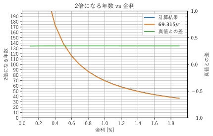

確定拠出型年金¶
確定拠出型年金の商品選択の基本方針を記載する。
投資に関する基本方針¶
リスクを取ってリターンを期待する。確定拠出型年金の運用額は高々知れている。多少リスクを大きくとっても良いだろう。また強制的に定年まで積み立てることになるので、この点でもリスクを取ることが可能と考える。
ポートフォリオ¶
非課税枠を有効活用するためにも基本的に100%株式とする。通常のポートフォリオでは債権と混ぜてリスクを小さくするが、先述したように運用額が小さい。もしリスクヘッジの為に債権を混ぜるのであれば、確定拠出型年金の枠ではなく別枠で債権を運用した方がいい。それではどのような商品を選べばいいだろうか。一般的に将来成長する商品に投資するべきだが、それが分かれば苦労しない。一部の地域だけ切り取ってみると、浮き沈みがあるのが当たり前だが、世界全体で平均すれば基本的に経済は常に上向き傾向である。例え戦争などがあっても一部の地域は栄えるし、時間経過とともに回復している。ということで世界全体に投資する方針とする。全世界に投資するといっても先進国中心に投資する場合や、新興国を中心にする場合、またアクティブかパッシブか等、選択すべき項目が多くある。
投資先は可能な限り広範囲にすることでリスクが小さくなるが、そのバランスをどうするかが重要となる。一般的には現在の株式規模のバランスで投資するのが良いとされている。基本はこの全世界で、あとは好みで調整すればいい。全世界にバランスよく投資しようと思うと、「野村ＤＣ国内株式インデックスＦ」「野村ＤＣ外国株式インデックスＦ」「ＤＩＡＭ新興国株式インデックス」をバランスすることになる。おおざっぱにはそれぞれに1:8:1で投資するイメージだ。ところでこう見ると日本と新興国はパイが小さいことが分かる。本当にここにも投資する必要があるか考えてみたい。まずは日本から。日本は一番馴染みがあるが、日本に集中投資するということは、日本で働いていて日本の会社から給料を得ている私からすると少々リスクが大きいように感じる。株価が落ちるような時はボーナスも減るだろうしね。ということで個人的には日本はポートフォリオから除くことにした。次は新興国だ。新興国と言われると南米やアフリカが中心かと思うが、実はそうではない。。商品の一つであるＤＩＡＭ新興国株式インデックスの内訳をみてみよう。実際その多くが中国・韓国・台湾が占めている。これは皆がイメージする新興国とは少しずれるのではないだろうか。話がそれたが、実は本当の新興国はGDPと株価がうまくリンクしていない。まだ株式市場が未発達であったりすることが原因のようですが。。。また新興国の発展には先進国の援助が欠かせないのが実情だろう。ということは新興国の発展は先進国の発展にもつながっていると考えることができる。また一番大きな問題だが、新興国への投資は手数料が高い。「野村ＤＣ外国株式インデックスＦ」の手数料が0.154%に対して「ＤＩＡＭ新興国株式インデックス」は0.595%だ。これらの理由から新興国への投資もパスすることにした。
次にアクティブかパッシブかを考える。これは議論の余地なくパッシブ一択だろう。長期で平均するとパッシブに勝つアクティブはほんの数パーセントしか存在しないはず。またアクティブは手数料が高すぎるので手数料負けする可能性が高い。
これらから「野村ＤＣ外国株式インデックスＦ」100%で運用することにした。
確定拠出年金マッチング拠出制度¶
ところで確定拠出型年金だけでは運用額は高々知れている。このため、他の手段でも投資はしておきたい。ただ最近始まった確定拠出年金マッチング拠出制度に追加投資する前に、積立NISAの枠を埋めることをお勧めする。こちらの方が通常は使い勝手がいいだろう。
もし積立NISAを始めるならベストな選択肢は明らかに楽天証券+楽天カード。月5万までなら1%のポイントが入ってくるので実質1%引きで購入することが可能だ。
参考¶
もし手堅く運用するなら各国の年金機構のポートフォリオが参考になるだろう。
その他¶
元本保証型¶
確定拠出型年金の元本保証型の商品を確認してみる。
| 商品名 | 金利 |
|---|---|
| みずほＤＣ定期預金（１年） | 0.002% |
| 三井住友銀行ＤＣ定期（３年） | 0.002% |
| みずほＤＣ定期預金（５年） | 0.002% |
| ろうきん定期（スーパー型） | 0.10% |
| 第一のつみたて年金（５年） | 0.05% |
| 明治安田利率保証年金（５年） | 0.003% |
| ニッセイ１０年利率保証プラス | 0.108% |
| 第一のつみたて年金（１０年） | 0.07% |
ネット銀行の普通金利より低いのがほとんど、定期預金に意味すらありませんね。どうやらこちらを選択する意味はなさそうです。
72の法則¶
投資の世界では72の法則と呼ばれる法則がる。これはある金利でお金を預けたとき、2倍になる期間を表すもので金利をrとすると72/rが2倍にするのに必要な年数を表す。
数学的には $$ n= \frac{\log{2}}{\log{(1+r)}} $$ で表される。これをプロットしてみる。
金利が2%以上であれば誤差が1年以下となってまぁまぁ信頼できる法則であることが確認出来る。最近の銀行金利には全く当てはまらないですね。ちなみに2019年のネット銀行の最高金利0.1%で計算すると2倍になるのに693年必要です。
それでは金利が低いときに簡単に計算する方法はないのだろうか。上で示した式を考える。log{(1+r)}の計算が面倒なの近似式を考える。log{(1+r)}を原点付近でテイラー展開してみよう。f(x)の0付近でのテイラー展開（マクローリン展開）は $$ f(x) = f(0) + f'(0)x+\frac{1}{2!}f''(0)x^2+\frac{1}{3!}f'''(0)x^3+... $$ となる。xが極めて0に近い場合はf(x) = xとなる。\log{2}=0.69315なので $$ n' = \frac{69.315}{r} $$ と近似できる。これをプロットしてみよう。

こちらなら使えそうな精度ですね。使い道があるかは別として。。。